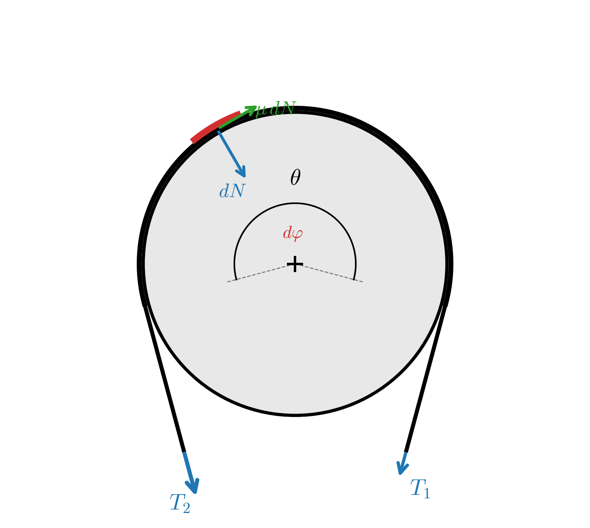
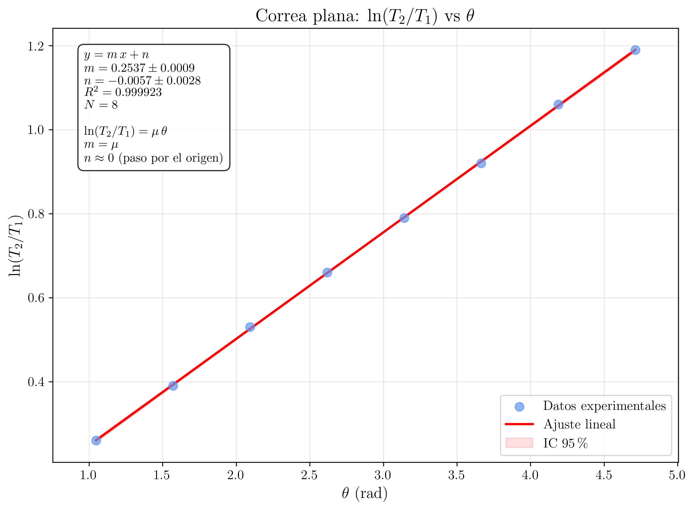
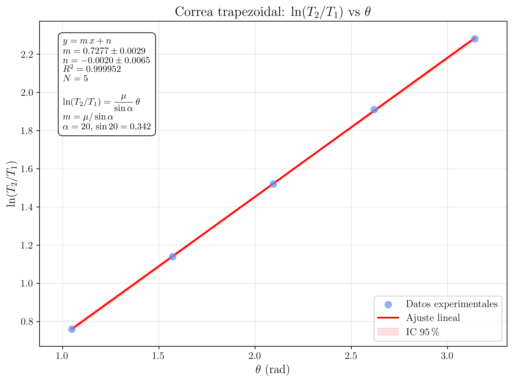

Laboratorio de Mecánica — UNED
2026-03-20
Determinación experimental del coeficiente de rozamiento por deslizamiento entre una correa y una polea cilíndrica mediante la fórmula de Euler-Eytelwein, T_2 = T_1 e^{\mu\theta}. Estudio con correas planas y trapezoidales a distintos ángulos de abrazamiento.
En esta experiencia se investiga el fenómeno de fricción entre una correa flexible y una polea cilíndrica, verificando experimentalmente la fórmula de Euler-Eytelwein. A partir de la medida de las tensiones en ambos extremos de la correa para distintos ángulos de abrazamiento, se determina el coeficiente de rozamiento \mu entre la correa y la polea, tanto para correas planas como para correas trapezoidales (en V).
Considérese una correa plana, flexible e inextensible, que abraza parcialmente una polea cilíndrica de radio R, formando un ángulo de contacto (o ángulo de abrazamiento) \theta. La correa está sometida a dos tensiones en sus extremos: T_{1} en el lado flojo (slack side) y T_{2} en el lado tenso (tight side), siendo T_{2} > T_{1}.
Cuando la correa está a punto de deslizar sobre la polea, la fricción entre ambas superficies alcanza su valor máximo. El problema consiste en determinar la relación entre T_{2} y T_{1} en función del ángulo de abrazamiento \theta y del coeficiente de rozamiento \mu.
Para obtener la relación entre las tensiones, se analiza el equilibrio de un elemento diferencial de correa que subtiende un ángulo d\varphi sobre la polea.
Sobre este elemento actúan:
Equilibrio en la dirección radial (normal):
El elemento subtiende un ángulo d\varphi. Proyectando las tensiones en la dirección radial:
dN = T \sin\!\left(\dfrac{d\varphi}{2}\right) + (T + dT)\sin\!\left(\dfrac{d\varphi}{2}\right) \tag{1}
Para ángulos infinitesimales, \sin\!\left(\dfrac{d\varphi}{2}\right) \approx \dfrac{d\varphi}{2}, y despreciando el término dT\,\dfrac{d\varphi}{2} (infinitésimo de segundo orden):
dN \approx T\, d\varphi \tag{2}
Equilibrio en la dirección tangencial:
(T + dT)\cos\!\left(\dfrac{d\varphi}{2}\right) - T\cos\!\left(\dfrac{d\varphi}{2}\right) = \mu\, dN \tag{3}
Para ángulos infinitesimales, \cos\!\left(\dfrac{d\varphi}{2}\right) \approx 1:
dT = \mu\, dN \tag{4}
Sustituyendo la Ecuación 2 en la Ecuación 4:
dT = \mu\, T\, d\varphi \tag{5}
Esta es una ecuación diferencial de variables separables. Separando e integrando entre los extremos de la zona de contacto:
\int_{T_{1}}^{T_{2}} \dfrac{dT}{T} = \int_{0}^{\theta} \mu\, d\varphi \tag{6}
\ln\!\left(\dfrac{T_{2}}{T_{1}}\right) = \mu\,\theta \tag{7}
Fórmula de Euler-Eytelwein (correa plana)
La relación fundamental entre las tensiones de una correa plana sobre una polea es:
\boxed{T_{2} = T_{1}\, e^{\mu\, \theta}} \tag{8}
donde \theta se mide en radianes, T_{2} es la tensión en el lado tenso, T_{1} es la tensión en el lado flojo y \mu es el coeficiente de rozamiento estático entre la correa y la polea.
La fórmula es independiente del radio R de la polea. Solo depende del ángulo de abrazamiento y del coeficiente de rozamiento.
La relación es exponencial: pequeños aumentos del ángulo de contacto producen grandes incrementos en la relación T_{2}/T_{1}. Esto explica por qué basta dar varias vueltas de cuerda alrededor de un poste para sujetar cargas muy elevadas.
La fórmula fue publicada por Leonhard Euler en 1762 y posteriormente redescubierta por Johann Albert Eytelwein en 1808.
En una correa trapezoidal, la sección transversal tiene forma de cuña con un semiángulo \alpha. La correa se asienta en una ranura acanalada en la polea, de modo que el contacto se produce en las caras laterales de la cuña, no en el fondo de la ranura.
Debido a la geometría, la fuerza normal que la polea ejerce sobre la correa se amplifica por un factor 1/\sin\alpha respecto a la correa plana. El análisis del elemento diferencial conduce a la fórmula modificada:
\boxed{T_{2} = T_{1}\, e^{\mu\, \theta / \sin\alpha}} \tag{9}
Como \sin\alpha < 1 (para los ángulos típicos de correas trapezoidales, \alpha \approx 17°–20°), el efecto de la fricción se multiplica considerablemente, lo que permite transmitir mayores fuerzas con menor ángulo de abrazamiento.
Para la determinación experimental de \mu, se toman logaritmos en la ecuación Ecuación 8:
\boxed{\ln\!\left(\dfrac{T_{2}}{T_{1}}\right) = \mu\,\theta} \tag{10}
Si se representa gráficamente \ln(T_{2}/T_{1}) frente a \theta (en radianes), los puntos experimentales deben ajustarse a una recta que pasa por el origen, cuya pendiente es el coeficiente de rozamiento \mu.
De forma análoga, para la correa trapezoidal:
\ln\!\left(\dfrac{T_{2}}{T_{1}}\right) = \dfrac{\mu}{\sin\alpha}\,\theta \tag{11}
y la pendiente de la recta es \mu/\sin\alpha, de donde se puede extraer \mu si se conoce \alpha.
El dispositivo experimental consta de una polea cilíndrica montada sobre un eje horizontal fijo en un soporte universal. La correa (plana o trapezoidal) se coloca sobre la polea abrazando un ángulo \theta que se puede variar y medir con un transportador de ángulos (goniómetro) solidario al soporte.
En cada extremo de la correa se conecta un dinamómetro. En el lado flojo se cuelga una masa fija conocida que proporciona la tensión T_{1}. En el lado tenso se tira progresivamente del dinamómetro hasta que la correa comienza a deslizar; en ese instante, la lectura del dinamómetro corresponde a la tensión T_{2}.
| Elemento | Descripción |
|---|---|
| Polea | Cilindro metálico, R \approx 5 cm |
| Correa plana | Banda de cuero/algodón, ancho \approx 2 cm |
| Correa en V | Sección trapezoidal, \alpha \approx 20° |
| Dinamómetros | Rango 0–20 N, precisión 0.1 N |
| Goniómetro | Precisión \pm\, 5° |

1
Montar la polea en el soporte universal y colocar la correa plana sobre ella, de modo que abarque un ángulo de contacto \theta = 60° (\pi/3 rad).
Asegurarse de que la correa quede en contacto uniforme con la superficie de la polea y de que los dinamómetros estén correctamente enganchados a ambos extremos.
2
En el lado flojo de la correa, colgar una masa fija que produzca una tensión T_{1} conocida. Se recomienda utilizar T_{1} \approx 2 N (por ejemplo, una masa de \approx 200 g).
Anotar el valor exacto de T_{1} leído en el dinamómetro del lado flojo.
3
En el lado tenso, tirar lentamente del dinamómetro hasta que la correa comience a deslizar sobre la polea.
Anotar el valor de T_{2} en el instante en que se inicia el deslizamiento.
Repetir esta medida 5 veces para el mismo ángulo y calcular el valor medio de T_{2}.
4
Repetir los pasos 2 y 3 para los siguientes ángulos de abrazamiento: \theta = 90°, 120°, 150°, 180°, 210°, 240°, 270°.
Para cada ángulo, registrar T_{1}, las 5 medidas de T_{2} y el valor medio.
Datos
experimentales
A continuación se resumen los datos recogidos en el laboratorio para la correa plana.
Se ha fijado T_{1} = 2.0 N en todos los casos.
| Medida | \theta\textrm{ (°)} | \theta\textrm{ (rad)} | T_{2,1}\textrm{ (N)} | T_{2,2}\textrm{ (N)} | T_{2,3}\textrm{ (N)} | T_{2,4}\textrm{ (N)} | T_{2,5}\textrm{ (N)} | \overline{T_{2}}\textrm{ (N)} |
|---|---|---|---|---|---|---|---|---|
| 1 | 60 | 1.047 | 2.7 | 2.6 | 2.7 | 2.8 | 2.6 | 2.68 |
| 2 | 90 | 1.571 | 3.0 | 2.9 | 3.0 | 3.1 | 2.9 | 2.98 |
| 3 | 120 | 2.094 | 3.4 | 3.3 | 3.5 | 3.4 | 3.3 | 3.38 |
| 4 | 150 | 2.618 | 3.8 | 3.9 | 3.8 | 3.7 | 3.9 | 3.82 |
| 5 | 180 | 3.142 | 4.3 | 4.4 | 4.4 | 4.3 | 4.5 | 4.38 |
| 6 | 210 | 3.665 | 5.0 | 4.9 | 5.0 | 5.1 | 4.9 | 4.98 |
| 7 | 240 | 4.189 | 5.6 | 5.7 | 5.7 | 5.5 | 5.6 | 5.62 |
| 8 | 270 | 4.712 | 6.4 | 6.5 | 6.3 | 6.5 | 6.4 | 6.42 |
5
Para cada ángulo, calcular \ln(\overline{T_{2}}/T_{1}).
Completar una tabla con las columnas: \theta (rad), \overline{T_{2}} (N), \overline{T_{2}}/T_{1}, \ln(\overline{T_{2}}/T_{1}).
Cálculo
| \theta\textrm{ (rad)} | \overline{T_{2}}\textrm{ (N)} | \overline{T_{2}}/T_{1} | \ln(\overline{T_{2}}/T_{1}) |
|---|---|---|---|
| 1.047 | 2.68 | 1.340 | 0.293 |
| 1.571 | 2.98 | 1.490 | 0.399 |
| 2.094 | 3.38 | 1.690 | 0.525 |
| 2.618 | 3.82 | 1.910 | 0.647 |
| 3.142 | 4.38 | 2.190 | 0.783 |
| 3.665 | 4.98 | 2.490 | 0.912 |
| 4.189 | 5.62 | 2.810 | 1.033 |
| 4.712 | 6.42 | 3.210 | 1.166 |
6
Representar gráficamente \ln(T_{2}/T_{1}) frente a \theta (en radianes) y realizar una regresión lineal forzando el paso por el origen.
La pendiente de la recta es el coeficiente de rozamiento \mu.
Calcular también el error en \mu a partir de la regresión.

Regresión lineal y obtención de \mu (correa plana)
Linealización: comparación entre la ecuación física y la ecuación matemática
La ecuación de Euler-Eytelwein linealizada (ecuación Ecuación 10) es:
\ln\!\left(\frac{T_{2}}{T_{1}}\right) = \mu\,\theta
Esta expresión tiene la estructura de una recta que pasa por el origen (y = m\,x + 0):
Ecuación física Ecuación matemática (y = m\,x + n) \ln(T_{2}/T_{1}) y \theta x \mu pendiente m 0 ordenada en el origen n Por lo tanto, al ajustar la nube de puntos experimentales a una recta que pasa por el origen, la pendiente m es directamente el coeficiente de rozamiento \mu.
Fórmulas de la regresión lineal (forzando paso por el origen)
Cuando se fuerza n = 0, la fórmula del estimador de la pendiente por mínimos cuadrados se simplifica a:
\boxed{m = \dfrac{\displaystyle\sum_{i=1}^{N} x_{i}\, y_{i}}{\displaystyle\sum_{i=1}^{N} x_{i}^{2}}}
Y el error de la pendiente se estima como:
\boxed{\Delta m = \sqrt{\dfrac{\displaystyle\frac{1}{N-1}\sum_{i=1}^{N}\left(y_{i} - m\,x_{i}\right)^{2}}{\displaystyle\sum_{i=1}^{N} x_{i}^{2}}}}
Cálculo numérico con los datos experimentales
Con los N = 8 puntos de la tabla (x_{i} = \theta_{i} en rad, y_{i} = \ln(\overline{T_{2}}/T_{1})):
\sum_{i=1}^{8} x_{i}\, y_{i} = 1{,}047\!\times\!0{,}293 + 1{,}571\!\times\!0{,}399 + \cdots + 4{,}712\!\times\!1{,}166 \approx 18{,}61
\sum_{i=1}^{8} x_{i}^{2} = 1{,}047^{2} + 1{,}571^{2} + \cdots + 4{,}712^{2} \approx 74{,}15
La pendiente es:
m = \frac{18{,}61}{74{,}15} \approx 0{,}251
Para el error, se calculan los residuos r_{i} = y_{i} - m\,x_{i} y se obtiene:
\frac{1}{N-1}\sum_{i=1}^{8}r_{i}^{2} \approx 2{,}0 \times 10^{-4}
\Delta m = \sqrt{\frac{2{,}0\times 10^{-4}}{74{,}15}} \approx 0{,}005
Resultado: coeficiente de rozamiento (correa plana)
Dado que \mu = m, el valor final es:
\boxed{\mu_{\textrm{plana}} = m \pm \Delta m = 0{,}251 \pm 0{,}005}
7
Sustituir la polea lisa por la polea acanalada y la correa plana por la correa trapezoidal. El semiángulo de la ranura es \alpha = 20°.
Repetir el mismo procedimiento de los pasos 1 a 5, utilizando la misma tensión T_{1} = 2.0 N.
Datos
experimentales
A continuación se resumen los datos recogidos en el laboratorio para la correa trapezoidal (\alpha = 20°).
Se ha fijado T_{1} = 2.0 N en todos los casos.
| Medida | \theta\textrm{ (°)} | \theta\textrm{ (rad)} | T_{2,1}\textrm{ (N)} | T_{2,2}\textrm{ (N)} | T_{2,3}\textrm{ (N)} | T_{2,4}\textrm{ (N)} | T_{2,5}\textrm{ (N)} | \overline{T_{2}}\textrm{ (N)} |
|---|---|---|---|---|---|---|---|---|
| 1 | 60 | 1.047 | 4.3 | 4.4 | 4.2 | 4.5 | 4.3 | 4.34 |
| 2 | 90 | 1.571 | 6.1 | 5.9 | 6.2 | 6.0 | 6.1 | 6.06 |
| 3 | 120 | 2.094 | 8.4 | 8.6 | 8.3 | 8.5 | 8.7 | 8.50 |
| 4 | 150 | 2.618 | 11.8 | 12.0 | 11.9 | 12.1 | 11.7 | 11.90 |
| 5 | 180 | 3.142 | 16.5 | 16.8 | 16.3 | 16.7 | 16.6 | 16.58 |
| \theta\textrm{ (rad)} | \overline{T_{2}}\textrm{ (N)} | \overline{T_{2}}/T_{1} | \ln(\overline{T_{2}}/T_{1}) |
|---|---|---|---|
| 1.047 | 4.34 | 2.170 | 0.775 |
| 1.571 | 6.06 | 3.030 | 1.109 |
| 2.094 | 8.50 | 4.250 | 1.447 |
| 2.618 | 11.90 | 5.950 | 1.784 |
| 3.142 | 16.58 | 8.290 | 2.115 |
8
Representar gráficamente \ln(T_{2}/T_{1}) frente a \theta y realizar la regresión lineal forzando el paso por el origen.
La pendiente obtenida es m = \mu/\sin\alpha. Conocido \alpha = 20° (\sin 20° = 0.342), despejar \mu.

Regresión lineal y obtención de \mu (correa trapezoidal)
Linealización: comparación entre la ecuación física y la ecuación matemática
Para la correa trapezoidal, la ecuación linealizada (ecuación Ecuación 11) es:
\ln\!\left(\frac{T_{2}}{T_{1}}\right) = \frac{\mu}{\sin\alpha}\,\theta
De nuevo, se trata de una recta que pasa por el origen (y = m\,x + 0):
Ecuación física Ecuación matemática (y = m\,x + n) \ln(T_{2}/T_{1}) y \theta x \mu/\sin\alpha pendiente m 0 ordenada en el origen n La pendiente m no es directamente \mu, sino m = \mu/\sin\alpha. Por tanto:
\boxed{\mu = m \cdot \sin\alpha}
Cálculo numérico con los datos experimentales
Con los N = 5 puntos de la tabla (x_{i} = \theta_{i} en rad, y_{i} = \ln(\overline{T_{2}}/T_{1})), aplicando la misma fórmula de regresión lineal con paso por el origen:
\sum_{i=1}^{5} x_{i}\, y_{i} = 1{,}047\!\times\!0{,}775 + 1{,}571\!\times\!1{,}109 + 2{,}094\!\times\!1{,}447 + 2{,}618\!\times\!1{,}784 + 3{,}142\!\times\!2{,}115 \approx 15{,}17
\sum_{i=1}^{5} x_{i}^{2} = 1{,}047^{2} + 1{,}571^{2} + 2{,}094^{2} + 2{,}618^{2} + 3{,}142^{2} \approx 20{,}92
La pendiente es:
m = \frac{15{,}17}{20{,}92} \approx 0{,}725
Para el error de la pendiente, calculando los residuos:
\Delta m = \sqrt{\frac{\frac{1}{N-1}\sum r_{i}^{2}}{\sum x_{i}^{2}}} \approx 0{,}008
Obtención de \mu y su error
Despejando \mu:
\mu = m \cdot \sin\alpha = 0{,}725 \times \sin(20°) = 0{,}725 \times 0{,}342 = 0{,}248
Propagación del error. El coeficiente de rozamiento \mu = m\,\sin\alpha es función de dos variables: m (de la regresión) y \alpha (medido con el goniómetro). Aplicando propagación de errores:
\Delta\mu = \sqrt{\left(\frac{\partial\mu}{\partial m}\right)^{2}(\Delta m)^{2} + \left(\frac{\partial\mu}{\partial \alpha}\right)^{2}(\Delta\alpha)^{2}}
Calculando las derivadas parciales:
\frac{\partial\mu}{\partial m} = \sin\alpha \qquad;\qquad \frac{\partial\mu}{\partial\alpha} = m\,\cos\alpha
Con \Delta m = 0{,}008 y \Delta\alpha = 5° = 0{,}087 rad (precisión del goniómetro):
\Delta\mu = \sqrt{(\sin 20°)^{2}\,(0{,}008)^{2} + (0{,}725\,\cos 20°)^{2}\,(0{,}087)^{2}}
\Delta\mu = \sqrt{(0{,}342)^{2}\times(6{,}4\times 10^{-5}) + (0{,}681)^{2}\times(7{,}6\times 10^{-3})} \approx 0{,}008
Resultado: coeficiente de rozamiento (correa trapezoidal)
\boxed{\mu_{\textrm{V}} = 0{,}248 \pm 0{,}008}
Comparación entre correa plana y correa trapezoidal
Tipo de correa \mu Pendiente m Plana 0{,}251 \pm 0{,}005 0{,}251 Trapezoidal (\alpha = 20°) 0{,}248 \pm 0{,}008 0{,}725 Obsérvese que:
- El valor de \mu es esencialmente el mismo en ambos casos (dentro del margen de error experimental), como cabría esperar, ya que el material de la correa y la superficie de la polea son los mismos.
- Sin embargo, la pendiente de la recta \ln(T_{2}/T_{1}) vs \theta es casi 3 veces mayor para la correa trapezoidal (0{,}725 frente a 0{,}251). Esto se debe a que la geometría en cuña amplifica el efecto de la fricción por un factor 1/\sin\alpha = 1/\sin 20° \approx 2{,}92.
- La diferencia radica en que, a igualdad de ángulo de abrazamiento, la correa trapezoidal puede transmitir fuerzas mucho mayores sin deslizar.
9
Comparar los valores de \mu obtenidos en ambos casos (correa plana y correa trapezoidal). Discutir:
Ejercicios Previos
Ejercicio 2.1. Derivar la fórmula de Euler-Eytelwein (Ecuación 8) a partir del análisis del equilibrio de un elemento infinitesimal de correa sobre la polea. Explicar con detalle qué aproximaciones se realizan al considerar ángulos infinitesimales.
Ejercicio 2.2. Demostrar que la fórmula de Euler-Eytelwein es independiente del radio R de la polea. Explicar físicamente por qué el radio no interviene.
Solución del Ejercicio 2.2
En el análisis del elemento infinitesimal, las fuerzas que intervienen son las tensiones T y T + dT y las fuerzas de contacto dN y \mu\, dN. Ninguna de estas fuerzas depende explícitamente del radio R.
Físicamente, al aumentar el radio de la polea, la longitud de contacto aumenta (para el mismo ángulo \theta), pero la presión de contacto disminuye proporcionalmente, de modo que la fuerza de rozamiento total permanece inalterada.
Matemáticamente, el arco de contacto es s = R\,\theta. La presión normal por unidad de longitud es p = T/(R), y la fuerza de rozamiento por unidad de longitud es \mu\, p = \mu\, T / R. La fuerza de rozamiento total integrada sobre el arco es \mu\, T\, \theta, que no depende de R.
Ejercicio 2.3. Un marinero sujeta un cabo enrollado 3 vueltas completas alrededor de un noray (poste de amarre). Si el coeficiente de rozamiento es \mu = 0.3, y el marinero ejerce una fuerza de 50 N en su extremo, ¿cuál es la máxima tensión que puede soportar el cabo en el otro extremo (el conectado al barco)?
Solución del Ejercicio 2.3
Tres vueltas completas corresponden a un ángulo de abrazamiento \theta = 3 \times 2\pi = 6\pi rad.
Aplicando la fórmula de Euler-Eytelwein:
T_{2} = T_{1}\, e^{\mu\,\theta} = 50\, e^{0.3 \times 6\pi} = 50\, e^{5.655}
T_{2} = 50 \times 286.0 \approx 14\,300 \textrm{ N} \approx 14.3 \textrm{ kN}
Esto ilustra el enorme efecto multiplicador de la fricción: con apenas 50 N de fuerza, el marinero puede contener una tensión de más de 14 kN, lo que equivale a sujetar un peso de aproximadamente 1.4 toneladas.
Ejercicio 2.4. Explicar por qué la correa trapezoidal transmite más fuerza que la correa plana para el mismo ángulo de abrazamiento y el mismo coeficiente de rozamiento. ¿Qué ocurre en el límite \alpha \to 90°?
Solución del Ejercicio 2.4
En la correa trapezoidal, la fuerza radial que ejerce la tensión de la correa se reparte entre las dos caras laterales de la ranura. Para mantener el equilibrio radial, la fuerza normal total sobre cada cara debe ser mayor que en el caso plano, concretamente un factor 1/\sin\alpha mayor.
Como la fuerza de rozamiento es proporcional a la normal, el rozamiento efectivo se multiplica por el mismo factor, resultando una pendiente \mu/\sin\alpha en lugar de \mu.
En el límite \alpha \to 90°, \sin\alpha \to 1, y la correa trapezoidal se comporta como una correa plana (la ranura se convierte en una superficie plana). Por el contrario, cuanto menor es \alpha, mayor es el efecto de amplificación, aunque en la práctica ángulos muy pequeños pueden provocar que la correa se atasque en la ranura.
Ejercicios Posteriores
Ejercicio 2.5. Con los datos experimentales de la correa plana, calcular el valor de \mu y su error \Delta \mu mediante regresión lineal forzando el paso por el origen. Representar gráficamente \ln(T_{2}/T_{1}) vs \theta con la recta de ajuste.
Ejercicio 2.6. Repetir el cálculo anterior para la correa trapezoidal. Obtener \mu y \Delta\mu. Comparar con el valor obtenido para la correa plana y discutir si son compatibles.
Ejercicio 2.7. Un sistema de transmisión por correa plana conecta dos poleas de radios R_{1} = 10 cm y R_{2} = 25 cm. La distancia entre centros es d = 60 cm. Si el coeficiente de rozamiento es \mu = 0.25 y la tensión máxima admisible en la correa es T_{\max} = 500 N:
- Calcular el ángulo de abrazamiento en la polea menor.
- Determinar la máxima diferencia de tensiones T_{2} - T_{1} que puede transmitir el sistema sin deslizamiento.
- Si la polea menor gira a n = 1500 rpm, calcular la potencia máxima transmisible.
Solución del Ejercicio 2.7
1. El ángulo de abrazamiento en la polea menor se obtiene geométricamente:
\theta_{1} = \pi - 2\arcsin\!\left(\dfrac{R_{2} - R_{1}}{d}\right) = \pi - 2\arcsin\!\left(\dfrac{0.15}{0.60}\right) = \pi - 2\arcsin(0.25)
\theta_{1} = \pi - 2 \times 0.2527 = \pi - 0.5054 \approx 2.636 \textrm{ rad} \approx 151°
2. La condición de no deslizamiento impone T_{2}/T_{1} \leq e^{\mu\,\theta_{1}}. El máximo se alcanza cuando T_{2} = T_{\max} = 500 N:
T_{1} = \dfrac{T_{2}}{e^{\mu\,\theta_{1}}} = \dfrac{500}{e^{0.25 \times 2.636}} = \dfrac{500}{e^{0.659}} = \dfrac{500}{1.933} \approx 258.7 \textrm{ N}
T_{2} - T_{1} \approx 500 - 258.7 = 241.3 \textrm{ N}
3. La velocidad lineal de la correa es v = \omega_{1}\, R_{1} = \dfrac{2\pi \times 1500}{60} \times 0.10 = 15.71 m/s.
La potencia máxima transmisible es:
P = (T_{2} - T_{1})\, v = 241.3 \times 15.71 \approx 3791 \textrm{ W} \approx 3.8 \textrm{ kW}
Ejercicio 2.8. Discutir las posibles fuentes de error en el experimento. En particular:
- ¿Cómo afecta la rigidez de la correa a la medida?
- ¿Qué error se comete si la correa no está perfectamente en contacto con la polea en toda la superficie?
- ¿Es razonable suponer que el coeficiente de rozamiento es constante a lo largo de todo el arco de contacto?
Referencias
- Universidad Carlos III de Madrid. Práctica 3: Rozamiento en correas. Departamento de Ingeniería Mecánica.
- Universidad Politécnica de Valencia. Fórmula de Euler-Eytelwein. Apuntes de Teoría de Máquinas y Mecanismos.
- Engineering LibreTexts. Belt Friction (Euler-Eytelwein). LibreTexts Engineering.
- Meriam, J.L. y Kraige, L.G. Engineering Mechanics: Statics. Wiley. Cap. 6: Fricción.
- Beer, F.P. y Johnston, E.R. Mecánica Vectorial para Ingenieros: Estática. McGraw-Hill. Cap. 8: Rozamiento.